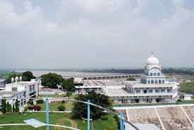
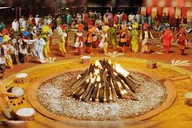

CITIES AND PLACES
Chandigarh
- Rock Garden: An artistic garden made from industrial and urban waste, featuring sculptures and waterfalls.
- Sukhna Lake: A man-made lake offering boating and a scenic spot for picnics and walks.
- Rose Garden: Asia's largest rose garden, home to thousands of varieties of roses and other flowers.

- Punjab University: A prestigious educational institution known for its beautiful campus and architecture.
- Elante Mall: A popular shopping destination offering a variety of brands, dining options, and entertainment.
- Government Museum and Art Gallery: A museum showcasing art, sculptures, and historical artifacts.
Ludhiana
- Punjab Agricultural University Museum: A museum showcasing the agricultural heritage and innovations of Punjab.
- Gurudwara Charan Kamal: A revered Sikh shrine known for its beautiful architecture and spiritual significance.
- Ludhiana Zoo: A well-maintained zoo featuring various species of animals and a peaceful environment.

- Rakh Bagh Park: A large park with lush greenery, walking paths, and recreational facilities.
- Firoz Shah Palace: A historic palace that reflects the rich heritage of the region.
- Maharaja Ranjit Singh War Museum: A museum dedicated to the history of the Punjab region, focusing on its military history.
Amritsar
- Golden Temple: The holiest gurdwara of Sikhism, known for its stunning architecture and serene atmosphere.
- Jallianwala Bagh: A historic garden and memorial site commemorating the victims of the 1919 massacre.
- Partition Museum: A museum dedicated to the history and impact of the Partition of India in 1947.

- Ram Tirath: An ancient temple site believed to be the birthplace of Lava and Kusha, sons of Lord Rama.
- Wagah Border: The India-Pakistan border, famous for its flag-lowering ceremony held every evening.
- Amritsar Heritage Walk: A guided tour through the old city, showcasing its rich history and architecture.
Jalandhar
- Pushpa Gujral Science City: An educational and recreational complex featuring interactive science exhibits and a planetarium.
- Jalandhar City Museum: A museum showcasing the rich history and culture of Jalandhar through various artifacts.
- Devi Talab Mandir: A famous temple dedicated to Goddess Durga, known for its serene atmosphere and beautiful architecture.

- Guru Ravidass Temple: A significant religious site dedicated to Guru Ravidass, attracting many visitors.
- Rangla Punjab: A cultural village showcasing traditional Punjabi culture, music, and dance.
- Wonderland Theme Park: An amusement park offering rides and entertainment for families and children.
Patiala
- Qila Mubarak: A historic fort complex that showcases stunning Mughal architecture and royal heritage.
- Sheesh Mahal: A beautiful palace known for its intricate glasswork and lush gardens.
- Gurudwara Dukh Niwaran Sahib: A prominent Sikh shrine dedicated to Guru Tegh Bahadur, offering spiritual solace.

- Baradari Garden: A serene garden ideal for relaxation, featuring lush greenery and walking paths.
- Patiala Peg: A famous drink named after the city, reflecting its rich cultural heritage.
- Moti Bagh Palace: A grand palace surrounded by beautiful gardens, showcasing the lifestyle of the erstwhile royalty.
Other Attractions
Fatehgarh Sahib
- Gurudwara Fatehgarh Sahib: A significant Sikh shrine commemorating the martyrdom of the younger sons of Guru Gobind Singh.
- Fatehgarh Sahib Museum: A museum showcasing artifacts and exhibits related to Sikh history and culture.
- Jandiala Guru: A historical site with a beautiful Gurudwara, known for its serene ambiance.

- Shahid-E-Azam Bhagat Singh Museum: A museum dedicated to the legacy of Bhagat Singh and other freedom fighters.
- Fatehgarh Sahib Fort: A historic fort that offers insight into the region's past and beautiful views.
- Gurudwara Jandiala: Another important Sikh shrine in the area, known for its spiritual significance.
Ropar (Rupnagar)
- Rupnagar Fort: An ancient fort with historical significance, offering insights into the region's past.
- Bhakra Nangal Dam: A major hydroelectric project that provides stunning views and recreational opportunities.
- Virasat-e-Khalsa: A museum showcasing the rich history and culture of Punjab, including Sikh heritage.

- Gurudwara Gangsar Sahib: A revered Sikh shrine known for its peaceful ambiance and historical importance.
- Archaeological Museum: A museum that houses artifacts from ancient civilizations and offers educational exhibits.
- Ropar Wetlands: A beautiful natural habitat that attracts various bird species and is perfect for nature lovers.
Festivals and Cultural Events
Baisakhi
Baisakhi, celebrated on April 13, marks the Punjabi New Year and the harvest festival. It holds great significance for Sikhs as it commemorates the formation of the Khalsa in 1699.
The festival is celebrated with immense enthusiasm, featuring vibrant processions, traditional music, and dance performances like Bhangra and Gidda. People dress in colorful attire and prepare delicious traditional foods, making it a time of joy and community bonding.
Lohri
Lohri is a vibrant Punjabi festival celebrated on January 13th each year, marking the end of winter and the arrival of longer days. It is primarily a harvest festival, celebrating the harvest of sugarcane and the end of the cold season.

Highlights of Lohri:
- Bonfire: The festival is celebrated with a large bonfire where people gather to sing and dance.
- Bhangra and Gidda: Traditional dances that are performed around the bonfire, filled with energy and joy.
- Sweets and Snacks: People enjoy traditional foods like gurd (jaggery), peanuts, and popcorn, which are offered to the fire.
Adventure and Nature Activities
Punjab Rural Heritage Museum (Pind Sangraur)
- Overview: A unique museum that showcases the rich rural heritage of Punjab through traditional crafts, architecture, and culture.
- Activities: Engage in hands-on activities such as pottery, weaving, and traditional Punjabi games, offering an immersive cultural experience.
- Nature Walks: Explore the surrounding landscapes, providing opportunities to appreciate local flora and fauna.
.jpeg)
- Cultural Shows: Attend traditional music and dance performances that celebrate Punjabi culture.
- Workshops: Participate in workshops focused on traditional crafts like weaving and pottery.
- Local Cuisine: Enjoy authentic Punjabi meals available at the museum's restaurant.
Punjab Wildlife Sanctuaries
- Harike Wetland: A significant bird sanctuary and wetland, perfect for birdwatching and nature walks.
- Ramsar Wetland: Known for its rich biodiversity, this sanctuary is home to various flora and fauna.
- Bir Moti Bagh Wildlife Sanctuary: A sanctuary that offers opportunities for wildlife spotting and eco-tours.
- Fatehgarh Sahib Wildlife Sanctuary: Offers a variety of flora and fauna, making it ideal for nature lovers and photographers.
- Sirhind Canal: A scenic area where visitors can enjoy nature trails and water activities.
- Nature Parks: Various parks throughout Punjab provide opportunities for trekking, birdwatching, and outdoor activities.